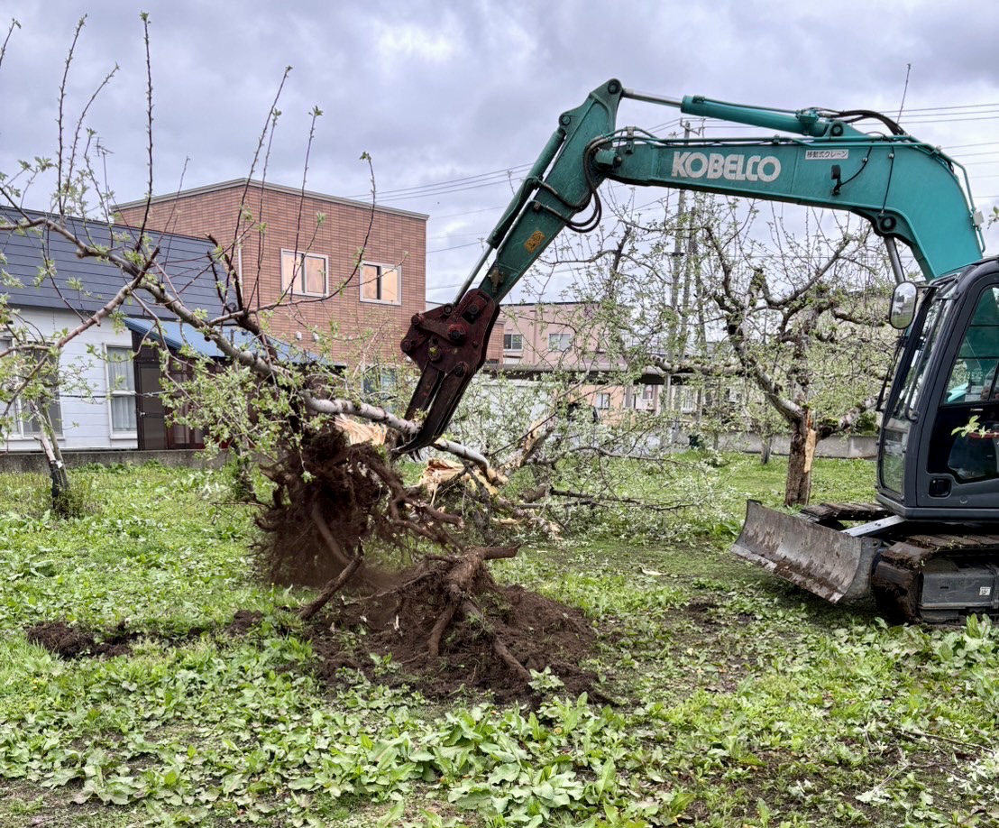

伐木事業
logging
伐木について
当社は、樹木伐採・伐根を承ります。経験豊富なスタッフと最新の機材を駆使し、安全性と効率性を重視した作業を行います。伐採から運搬、伐根まで、お客様の負担を軽減する総合的なサポートをご提供します。
お客様をケガから守る
当社の「樹木伐採・伐根」サービスは、お客様のニーズに合わせて、安全で迅速な作業を提供します。
病気や老朽化した木の伐採は、専門的な技術と機材が必要な作業です。当社の経験豊富なチームが、お客様の負担を軽減し、安全に作業を行います。
専門機材を用いた伐根作業
木の伐根作業には、重機やトラックを使用する大規模な作業が必要です。
当社の熟練スタッフが最新の機材を使用し、安全かつ効率的に作業を行います。切り株や根の処理も迅速に行い、土地の再利用をスムーズにサポートいたします。
作業はすべて自社で完結
伐採した木の運搬や伐根作業は、非常に労力のかかる作業です。当社はこれらの作業をすべて担当します。
困っている農家の皆様の力となるために、全力でサポートいたします。